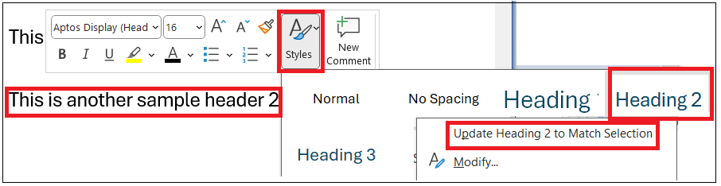
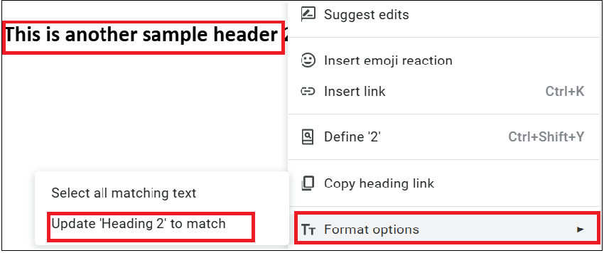
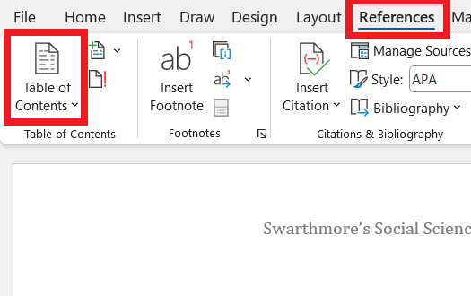
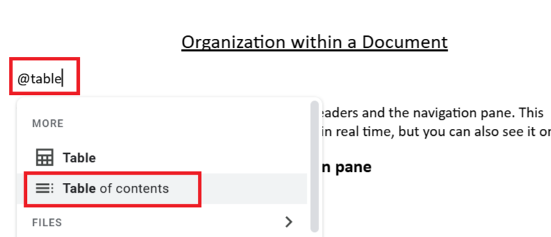
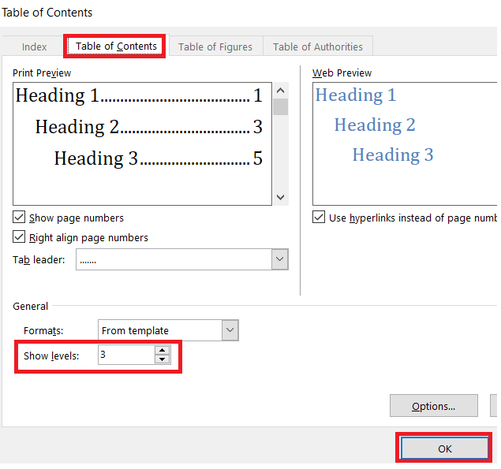
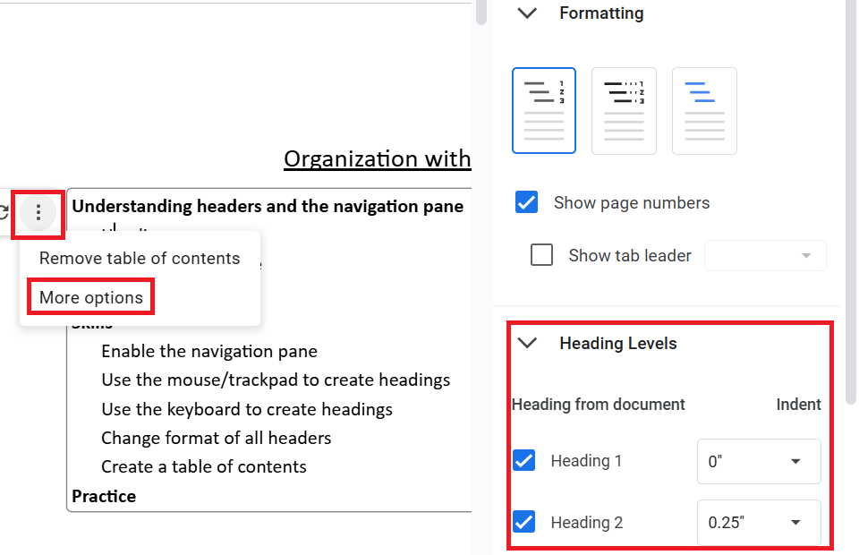

2 Skills
Use the mouse/trackpad to create headings
Select a heading from the “Styles” section of the “Home” ribbon (Word) or Styles section of the ribbon (Google Doc, the default style is “normal”) using a mouse/trackpad. This is straightforward but takes more time than using keyboard shortcuts.
Use the keyboard to create headings
Headings are especially practical if you memorize the keystrokes to generate them.
| Type | Microsoft Word (PC) |
Google Docs (PC) |
Microsoft Word (Mac) |
Google Docs (Mac) |
| Heading level 1 | Ctrl+alt+1 | Ctrl+alt+1 | Cmd+option+1 | Cmd+option+1 |
| Heading level 2 | Ctrl+alt+2 | Ctrl+alt+2 | Cmd+option+2 | Cmd+option+2 |
| Heading level 3 | Ctrl+alt+3 | Ctrl+alt+3 | Cmd+option+3 | Cmd+option+3 |
| Normal | Ctrl+shift+n | Ctrl+alt+0 | Cmd+shift+n | Cmd+option+0 |
| Heading dialogue box | Ctrl+shift+s | (see text below) |
Note that Google Docs can create additional heading levels beyond level 3 using the same keyboard shortcut pattern. Microsoft Word stops keyboard shortcuts after heading level 3, although Ctrl+shift+s (PC) provides a handy alternative for lower-level headings. A more complex solution for a Mac can be found by Googling “mac apply styles shortcut word.”
Sometimes you might need to change multiple headers from UPPER CASE to Title Case or lower case. A handy trick in Microsoft Word is to change the case pattern of text using shift+f3 (PC) and Cmd+shift+a (Mac). Put your cursor in the middle of the word you want to change, then press the keyboard combination above.
Change format of all headers
On either platform, you can adjust heading formats easily with the following steps.
- Move to one of the existing headers a document. Change the format. For example, you can bold it. Keep your cursor blinking on that header.
- Make all headers with that level match your new format.
Microsoft Word: Right click (secondary click) the header you changed. Click “Styles” in the dialogue box that pops up. Right click (secondary click) the appropriate heading. Click “Update Heading __ to Match Selection.”

Google Docs: Right click (secondary click) the header you changed. Click “Format options” in the dialogue box that pops up. Click “Update Heading __ to match.”

- All headings of that level should now match the format of the heading your cursor started on.
Create a table of contents
Headers can be used to create a table of contents that is easy to update.
- Place your cursor blinking in the location you would like your table of contents to appear.
- Insert the table.
(Word) Select the “Reference” tab of the ribbon. Select “Table of Contents,” then one of the table styles.

(Google Docs) Type “@table” and select “Table of contents” from the dialogue box that pops up. There are multiple other methods to create a table of contents in Google Docs, but this is the quickest method, is reasonably intuitive, and is unlikely to change as Google Docs adjusts its user interface.

- Adjust the format.
(Word) Click “Custom Table of Contents” from the “Table of Contents” drop down menu shown above (item 2). In the “Table of Contents” tab, adjust the format. For example, change the sections shown with “Show levels.”

(Google Docs) Click the three vertical dots that appear to the left of the table of contents while your cursor or mouse is in the table of contents. Click “More options.” Then adjust the format. For example, change the sections shown by adjusting the heading levels.

Collaborate
There are multiple options to improve collaboration with colleagues.
- Create a table of contents using headers. Collaborators can click (Google Docs), Cmd+click (Word with a Mac), or Ctrl+click (Word with a PC) on a section of the table to jump to that section.
- Create links to relevant sections. Note that this may not work in documents over 50-100 pages long.
- In Google Docs, you can create links to share with others. Right (secondary) click on a heading and select “Copy heading link.”
- In Microsoft Word, you can embed hyperlinks within a document to other sections of the document using Ctrl+k (PC) or Cmd+k (Mac). Highlight the text that should have a link, press Ctrl+k (PC) or Cmd+k (Mac). Select “Place in This Document” from the dialogue box. Find and double click on the appropriate header.
- Tell collaborators to use the navigation pane to access a section of the document.
Practice
Head to the next page to practice these skills.